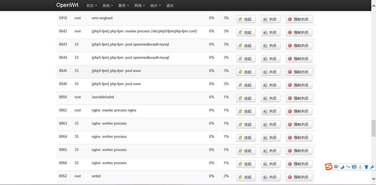
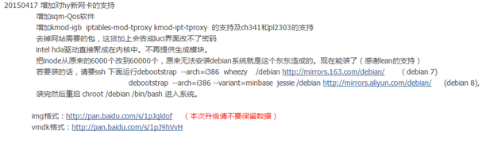

<!DOCTYPE html>
<html>
<head><meta name="generator" content="Hexo 3.9.0">
  <meta charset="utf-8">
  
<!-- Google Analytics -->
<script type="text/javascript">
(function(i,s,o,g,r,a,m){i['GoogleAnalyticsObject']=r;i[r]=i[r]||function(){
(i[r].q=i[r].q||[]).push(arguments)},i[r].l=1*new Date();a=s.createElement(o),
m=s.getElementsByTagName(o)[0];a.async=1;a.src=g;m.parentNode.insertBefore(a,m)
})(window,document,'script','//www.google-analytics.com/analytics.js','ga');

ga('create', 'UA-86850493-1', 'auto');
ga('send', 'pageview');

</script>
<!-- End Google Analytics -->


  
  <title>通过chroot将OpenWrt和OpenMediaVault合体 | Geek boood&#39;s blog</title>
  <meta name="viewport" content="width=device-width, initial-scale=1, maximum-scale=1">
  <meta name="description" content="OpenWrt和OpenMediaVault，一个是路由器软件，另外一个是NAS系统。如何让路由器获得完整的NAS功能呢？">
<meta property="og:type" content="article">
<meta property="og:title" content="通过chroot将OpenWrt和OpenMediaVault合体">
<meta property="og:url" content="https://geekboood.github.io/2015/07/17/通过chroot将OpenWrt和OpenMediaVault合体/index.html">
<meta property="og:site_name" content="Geek boood&#39;s blog">
<meta property="og:description" content="OpenWrt和OpenMediaVault，一个是路由器软件，另外一个是NAS系统。如何让路由器获得完整的NAS功能呢？">
<meta property="og:locale" content="default">
<meta property="og:image" content="https://geekboood.github.io/2015/07/17/通过chroot将OpenWrt和OpenMediaVault合体/1.png">
<meta property="og:image" content="https://geekboood.github.io/2015/07/17/通过chroot将OpenWrt和OpenMediaVault合体/2.png">
<meta property="og:updated_time" content="2019-07-31T04:07:04.056Z">
<meta name="twitter:card" content="summary">
<meta name="twitter:title" content="通过chroot将OpenWrt和OpenMediaVault合体">
<meta name="twitter:description" content="OpenWrt和OpenMediaVault，一个是路由器软件，另外一个是NAS系统。如何让路由器获得完整的NAS功能呢？">
<meta name="twitter:image" content="https://geekboood.github.io/2015/07/17/通过chroot将OpenWrt和OpenMediaVault合体/1.png">
  
    <link rel="alternate" href="/atom.xml" title="Geek boood&#39;s blog" type="application/atom+xml">
  
  
    <link rel="icon" href="/favicon.png">
  
  
    <link href="//fonts.googleapis.com/css?family=Source+Code+Pro" rel="stylesheet" type="text/css">
  
  <link rel="stylesheet" href="/css/style.css">
</head>
</html>
<body>
  <div id="container">
    <div id="wrap">
      <header id="header">
  <div id="banner"></div>
  <div id="header-outer" class="outer">
    <div id="header-title" class="inner">
      <h1 id="logo-wrap">
        <a href="/" id="logo">Geek boood&#39;s blog</a>
      </h1>
      
    </div>
    <div id="header-inner" class="inner">
      <nav id="main-nav">
        <a id="main-nav-toggle" class="nav-icon"></a>
        
          <a class="main-nav-link" href="/">Home</a>
        
          <a class="main-nav-link" href="/archives">Archives</a>
        
      </nav>
      <nav id="sub-nav">
        
          <a id="nav-rss-link" class="nav-icon" href="/atom.xml" title="RSS Feed"></a>
        
        <a id="nav-search-btn" class="nav-icon" title="Search"></a>
      </nav>
      <div id="search-form-wrap">
        <form action="//google.com/search" method="get" accept-charset="UTF-8" class="search-form"><input type="search" name="q" class="search-form-input" placeholder="Search"><button type="submit" class="search-form-submit">&#xF002;</button><input type="hidden" name="sitesearch" value="https://geekboood.github.io"></form>
      </div>
    </div>
  </div>
</header>
      <div class="outer">
        <section id="main"><article id="post-通过chroot将OpenWrt和OpenMediaVault合体" class="article article-type-post" itemscope itemprop="blogPost">
  <div class="article-meta">
    <a href="/2015/07/17/通过chroot将OpenWrt和OpenMediaVault合体/" class="article-date">
  <time datetime="2015-07-16T16:00:00.000Z" itemprop="datePublished">2015-07-17</time>
</a>
    
  </div>
  <div class="article-inner">
    
    
      <header class="article-header">
        
  
    <h1 class="article-title" itemprop="name">
      通过chroot将OpenWrt和OpenMediaVault合体
    </h1>
  

      </header>
    
    <div class="article-entry" itemprop="articleBody">
      
        <p>OpenWrt和OpenMediaVault，一个是路由器软件，另外一个是NAS系统。如何让路由器获得完整的NAS功能呢？</p>
<a id="more"></a>
<h2 id="一、简介"><a href="#一、简介" class="headerlink" title="一、简介"></a>一、简介</h2><p>（OpenMediaVault在文中有时被简称为OMV）</p>
<p>先不废话，上图，no图no bb<br></p>
<p>希望使用者有一定Linux基础</p>
<p>教程仅供参考，请实验安全后再向nas中添加数据，出现数据丢失，硬件损坏，出现经济损失等问题本人不负任何责任，教程仅供参考。请在使用前了解风险，数据珍贵，无法挽回。</p>
<p>首先本教程仅适用于OpenWrt X86版，并存在一些小问题，教程仅供参考需要一定Linux基础。<br>先上个图，no图no bb（图可能在最后了。。新人第一次发帖第一次写教程，多包涵。。）<br>再上教程（可能也在附件里了。。）<br>教程仅用作抛砖引玉作用，不希望作为商业用途，欢迎大家跟帖讨论解决问题</p>
<p>OpenWrt和OpenMediaVault合体是路由和NAS的合体，可以提供强大的功能，OpenMediaVault上门有丰富的插件，具体请搜索一下。<br>OpenWrt上也有需要的功能，比如多拨和负载均衡什么的，当然大神们可以在debian上直接实现，让大神们见笑了。</p>
<p>必要原料</p>
<p>1、运行OpenWrt X86的机器一台（可以组装嘛）</p>
<p>PS:根据 <a href="http://www.right.com.cn/forum/thread-152879-1-1.html" target="_blank" rel="noopener">http://www.right.com.cn/forum/thread-152879-1-1.html</a><br>的帖子里linfang26大神的经验，建议把OpenWrt的inode改到60000，以免出现问题！！（这个要在编译OpenWrt时候改的）<br><br>同时还要感谢lean大神！！</p>
<p>2、做好OpenMediaVault系统的系统盘</p>
<h2 id="二、步骤"><a href="#二、步骤" class="headerlink" title="二、步骤"></a>二、步骤</h2><p>1、首先将OpenWrt的管理端口（默认是80，因为openmediavault会抢占这个端口）改为别的，比如我把它改为800，ssh端口（默认是22）改为其他的，如23</p>
<p>2、挂载OpenMediaVault的硬盘。我将OpenMediaVault装在一块32g的ssd里，并将它挂载到/mnt/disk，如图</p>
<p>3、将切换和运行OpenMediaVault的脚本传到OpenWrt上</p>
<p>我将切换脚本命名为chroot，放在/root下，其内容如下：</p>
<figure class="highlight plain"><table><tr><td class="gutter"><pre><span class="line">1</span><br><span class="line">2</span><br><span class="line">3</span><br><span class="line">4</span><br><span class="line">5</span><br><span class="line">6</span><br><span class="line">7</span><br><span class="line">8</span><br></pre></td><td class="code"><pre><span class="line">echo &quot;proc /mnt/disk/proc proc defaults 0 0&quot; &gt;&gt; /etc/fstab</span><br><span class="line">mount proc /mnt/disk/proc -t proc</span><br><span class="line">echo &quot;sysfs /mnt/disk/sys sysfs defaults 0 0&quot; &gt;&gt; /etc/fstab</span><br><span class="line">mount sysfs /mnt/disk/sys -t sysfs</span><br><span class="line">mount -o bind /dev /mnt/disk/dev</span><br><span class="line">cp /etc/hosts /mnt/disk/etc/hosts</span><br><span class="line">cp /proc/mounts /mnt/disk/etc/mtab</span><br><span class="line">chroot /mnt/disk /bin/bash</span><br></pre></td></tr></table></figure>

<p>意思是挂载一些系统需要的文件夹，并切换到OpenMediaVault的bash</p>
<p>启动脚本如下：</p>
<figure class="highlight plain"><table><tr><td class="gutter"><pre><span class="line">1</span><br><span class="line">2</span><br><span class="line">3</span><br><span class="line">4</span><br><span class="line">5</span><br><span class="line">6</span><br><span class="line">7</span><br><span class="line">8</span><br><span class="line">9</span><br><span class="line">10</span><br><span class="line">11</span><br><span class="line">12</span><br><span class="line">13</span><br><span class="line">14</span><br><span class="line">15</span><br><span class="line">16</span><br><span class="line">17</span><br><span class="line">18</span><br><span class="line">19</span><br><span class="line">20</span><br></pre></td><td class="code"><pre><span class="line">mount /dev/sdb1 /media/     //这两步为挂载你的硬盘到挂载点</span><br><span class="line">mount /dev/sda1 /media/     //openmediavault里默认是/media/xxxxx</span><br><span class="line">omv-engined                 //启动omv主引擎。。。。（这翻译的。。）</span><br><span class="line">hdparm -S 60 /dev/sda       //设置硬盘休眠时间</span><br><span class="line">hdparm -S 60 /dev/sdb</span><br><span class="line">sh /usr/share/openmediavault/initsystem/10readline   //启动openmediavault的过程</span><br><span class="line">sh /usr/share/openmediavault/initsystem/20hostname</span><br><span class="line">sh /usr/share/openmediavault/initsystem/40interfaces</span><br><span class="line">sh /usr/share/openmediavault/initsystem/50timezone</span><br><span class="line">sh /usr/share/openmediavault/initsystem/65mdadm</span><br><span class="line">sh /usr/share/openmediavault/initsystem/70tmpfs</span><br><span class="line">sh /usr/share/openmediavault/initsystem/80resolvconf</span><br><span class="line">sh /usr/share/openmediavault/initsystem/90acpid</span><br><span class="line">sh /usr/share/openmediavault/initsystem/90sysctl</span><br><span class="line">sh /usr/share/openmediavault/initsystem/99rrd</span><br><span class="line">mount -t devpts devpts /dev/pts    //挂载重要的挂载点，要不ssh到omv时会出错</span><br><span class="line">/etc/init.d/php5-fpm start  //启动php的什么东西</span><br><span class="line">/etc/init.d/ssh start       //启动ssh</span><br><span class="line">nginx                       //启动nginx</span><br><span class="line">smbd                        //启动samba</span><br></pre></td></tr></table></figure>

<p>我将这个文件命名为open，并将此文件上传到OpenMediaVault磁盘的根目录下</p>
<p>4、通过putty这个软件ssh到OpenWrt，cd到root文件夹（如果以root登陆默认就是）并输入指令sh<br>chroot，随后命令行里的root@OpenWrt:~#会变成root@OpenWrt:/#，说明切换成功，随后输入命令sh<br>open</p>
<p>5、随后输入你路由器的ip地址就能看到OMV的节目啦，当然默认账户admin，密码openmediavault，这个随后一定要修改哦</p>
<h2 id="三、后续工作"><a href="#三、后续工作" class="headerlink" title="三、后续工作"></a>三、后续工作</h2><p>随后就跟配置OMV一样啦，安装omvextras什么的，另外你安装了什么服务一定要在open文件里添加哦，比如安装了mysql就要添加一行mysqld</p>
<p>一些想说的话</p>
<p>被迫使用这种方法也是无奈，直接使用omv-initsystem会报错，我能力不够怎么也发现不了问题在哪，所以只好一步步启动OMV的相关组件</p>
<p>这种方法还有很多问题，比如：</p>
<pre><code>每次开机都要执行sh chroot和sh open这两个步骤
直接将nas开放到公网有风险，会被黑，拿来ddos挖矿什么的，你的隐私文件也肯被发现</code></pre><p>剩下想说的是不希望被用作商业用途</p>
<p>版权所有，违反必究</p>

      
    </div>
    <footer class="article-footer">
      <a data-url="https://geekboood.github.io/2015/07/17/通过chroot将OpenWrt和OpenMediaVault合体/" data-id="cjyqra6cb00096xsf0ffg5eo1" class="article-share-link">Share</a>
      
      
    </footer>
  </div>
  
    
<nav id="article-nav">
  
    <a href="/2017/01/27/虚拟黑群晖恢复文件小计/" id="article-nav-newer" class="article-nav-link-wrap">
      <strong class="article-nav-caption">Newer</strong>
      <div class="article-nav-title">
        
          虚拟黑群晖恢复文件小计
        
      </div>
    </a>
  
  
</nav>

  
</article>

</section>
        
          <aside id="sidebar">
  
    

  
    

  
    
  
    
  <div class="widget-wrap">
    <h3 class="widget-title">Archives</h3>
    <div class="widget">
      <ul class="archive-list"><li class="archive-list-item"><a class="archive-list-link" href="/archives/2019/07/">July 2019</a></li><li class="archive-list-item"><a class="archive-list-link" href="/archives/2017/09/">September 2017</a></li><li class="archive-list-item"><a class="archive-list-link" href="/archives/2017/03/">March 2017</a></li><li class="archive-list-item"><a class="archive-list-link" href="/archives/2017/02/">February 2017</a></li><li class="archive-list-item"><a class="archive-list-link" href="/archives/2017/01/">January 2017</a></li><li class="archive-list-item"><a class="archive-list-link" href="/archives/2015/07/">July 2015</a></li></ul>
    </div>
  </div>


  
    
  <div class="widget-wrap">
    <h3 class="widget-title">Recent Posts</h3>
    <div class="widget">
      <ul>
        
          <li>
            <a href="/2019/07/30/BERT相关的一些实践/">BERT相关的一些实践</a>
          </li>
        
          <li>
            <a href="/2019/07/30/用Kubernetes建立实验集群/">用Kubernetes建立实验集群</a>
          </li>
        
          <li>
            <a href="/2019/07/30/移动端深度学习的现状与分析/">移动端深度学习的现状与分析</a>
          </li>
        
          <li>
            <a href="/2017/09/04/微博与Elastic的亿级数据实践/">微博与elastic的亿级数据实践</a>
          </li>
        
          <li>
            <a href="/2017/03/25/使用微博语料训练词向量/">使用微博语料训练词向量</a>
          </li>
        
      </ul>
    </div>
  </div>

  
</aside>
        
      </div>
      <footer id="footer">
  
  <div class="outer">
    <div id="footer-info" class="inner">
      &copy; 2019 Geek boood<br>
      Powered by <a href="http://hexo.io/" target="_blank">Hexo</a>
    </div>
  </div>
</footer>
    </div>
    <nav id="mobile-nav">
  
    <a href="/" class="mobile-nav-link">Home</a>
  
    <a href="/archives" class="mobile-nav-link">Archives</a>
  
</nav>
    

<script src="//ajax.googleapis.com/ajax/libs/jquery/2.0.3/jquery.min.js"></script>


  <link rel="stylesheet" href="/fancybox/jquery.fancybox.css">
  <script src="/fancybox/jquery.fancybox.pack.js"></script>


<script src="/js/script.js"></script>


  </div>
</body>
</html>